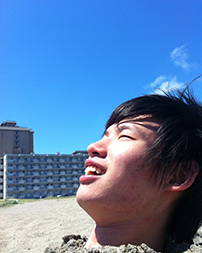

わたし  吉川 和希 (20) 公立はこだて未来大学 情報アーキテクチャ学科 情報デザインコース ３年 生まれ： 静岡県磐田市 好きなこと： 体を動かすこと 特技： ソフトボール、卓球、バレー サークル活動： ダンスサークル スキル Processing C言語 Java R HTML5 CSS3 JQuery Illustrator Photoshop 挑戦していること ブレイクダンス Unity x-code イラスト作成